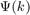
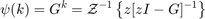

ELEC 460 Assignment 7
State-Space Model
format compact syms z warning off
Consider the discrete-time state equation
$$ \begin{bmatrix} x_1(k+1) \\ x_2(k+1) \end{bmatrix} = \begin{bmatrix} 0 & 1 \\ -0.24 & -1 \end{bmatrix}\begin{bmatrix} x_1(k) \\ x_2(k) \end{bmatrix} $$
Error updating Text.
Character vector must have valid interpreter syntax:
$$ \begin{bmatrix} x_1(k+1) \\ x_2(k+1) \end{bmatrix} = \begin{bmatrix} 0 & 1 \\ -0.24 & -1 \end{bmatrix}\begin{bmatrix} x_1(k) \\ x_2(k) \end{bmatrix} $$
Obtain the state transition matrix 
Since , and
$$ A=\begin{bmatrix} a & b \\ c & d \end{bmatrix}^{-1}= \frac{1}{ad-bc}\begin{bmatrix} d & -b \\ -c & a \end{bmatrix} $$
Error updating Text.
Character vector must have valid interpreter syntax:
$$ A=\begin{bmatrix} a & b \\ c & d \end{bmatrix}^{-1}= \frac{1}{ad-bc}\begin{bmatrix} d & -b \\ -c & a \end{bmatrix} $$
$$ \begin{align} & \mathcal{Z}^{-1} \left\{z[zI-G]^{-1}\right\} = z \begin{bmatrix} z & -1 \\ 0.24 & z+1 \end{bmatrix}^{-1}= \mathcal{Z}^{-1} \left\{\frac{z}{z^2+z-(-1)(0.24)}\begin{bmatrix} z+1 & 1 \\ -0.24 & z \end{bmatrix} \right\} \\ & \frac{F(z)}{z}=\mathcal{Z}^{-1} \left\{\frac{1}{(z+0.4)(z-0.6)}\begin{bmatrix} z+1 & 1 \\ -0.24 & z \end{bmatrix} \right\} \end{align} $$
Error updating Text.
Character vector must have valid interpreter syntax:
$$ \begin{align} & \mathcal{Z}^{-1} \left\{z[zI-G]^{-1}\right\} = z \begin{bmatrix} z & -1 \\ 0.24 & z+1 \end{bmatrix}^{-1}= \mathcal{Z}^{-1} \left\{\frac{z}{z^2+z-(-1)(0.24)}\begin{bmatrix} z+1 & 1 \\ -0.24 & z \end{bmatrix} \right\} \\ & \frac{F(z)}{z}=\mathcal{Z}^{-1} \left\{\frac{1}{(z+0.4)(z-0.6)}\begin{bmatrix} z+1 & 1 \\ -0.24 & z \end{bmatrix} \right\} \end{align} $$
Ignore all the previous matlab based errors, doesn't support advanced latex, or just matrices in latex
F1 = 1/((z+0.6)*(z+0.4)) %F1 = partfrac(F1) F2 = [z+1 1; ... -0.24 z;] F = F1*F2 F = partfrac(F)
F1 = 1/((z + 2/5)*(z + 3/5)) F2 = [ z + 1, 1] [ -6/25, z] F = [ (z + 1)/((z + 2/5)*(z + 3/5)), 1/((z + 2/5)*(z + 3/5))] [ -6/(25*(z + 2/5)*(z + 3/5)), z/((z + 2/5)*(z + 3/5))] F = [ 15/(5*z + 2) - 10/(5*z + 3), 25/(5*z + 2) - 25/(5*z + 3)] [ 6/(5*z + 3) - 6/(5*z + 2), 15/(5*z + 3) - 10/(5*z + 2)]